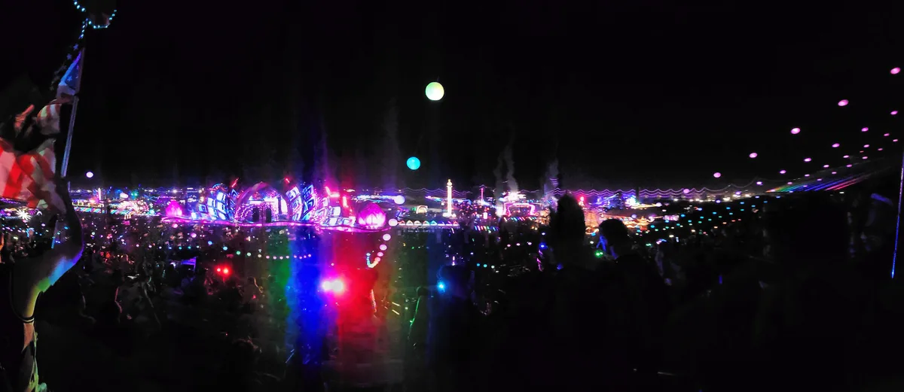
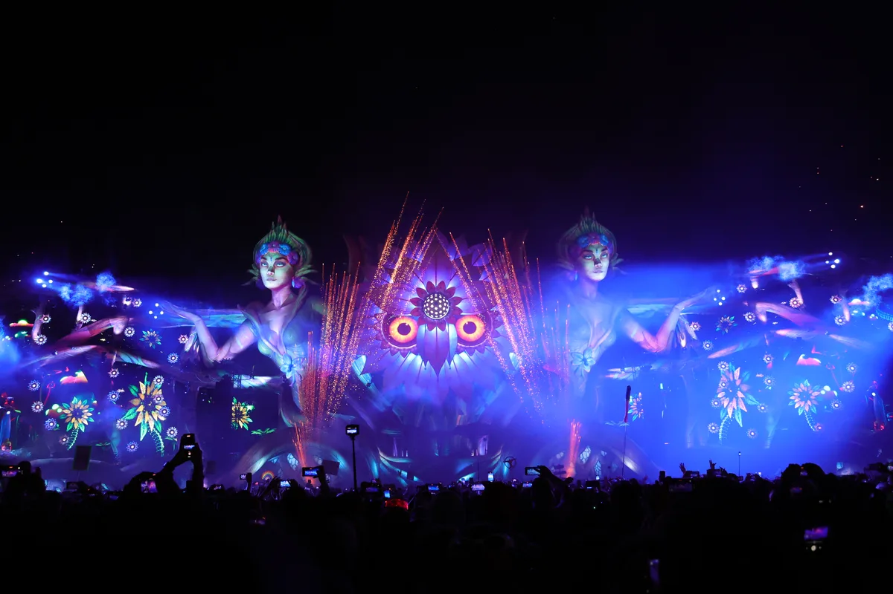
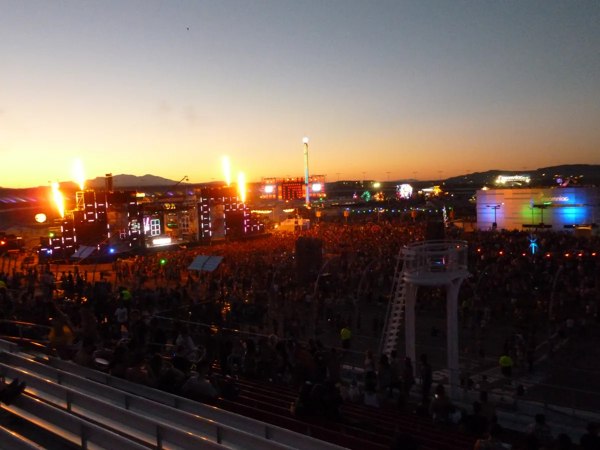
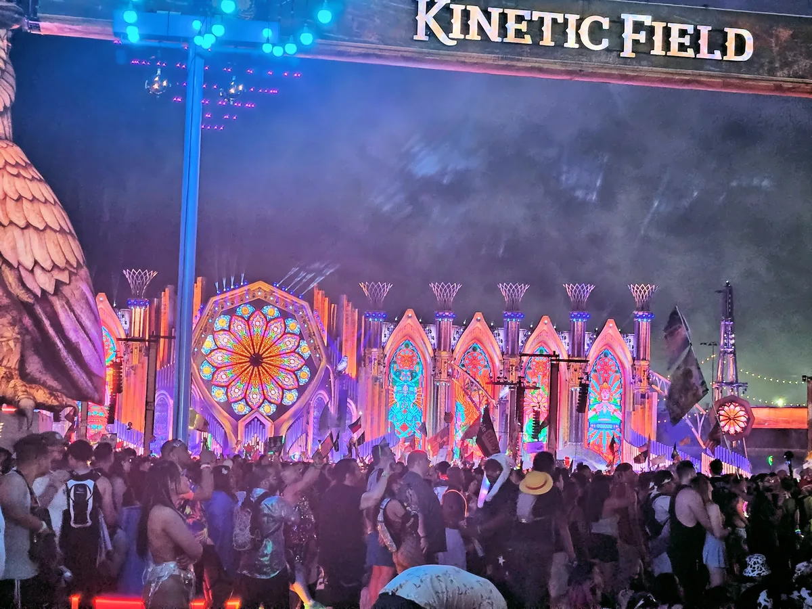
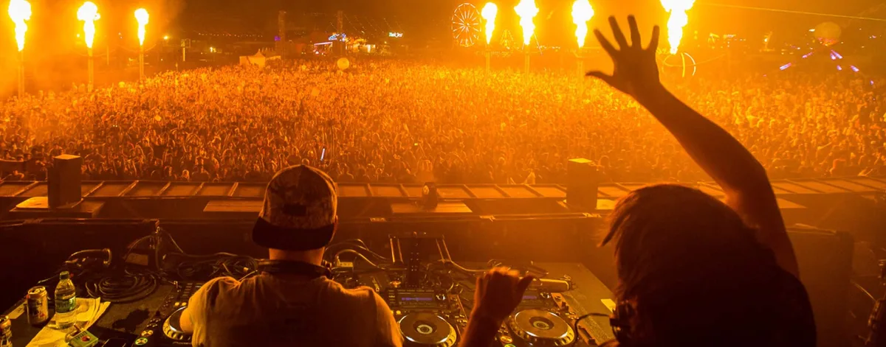

Electric Daisy Carnival
EDC Las Vegas
Three nights at a racetrack in the desert, home to North America's largest dance music festival. Where it happens, how big it really is, who owns it, and what plays away from kineticFIELD.
The biggest night out in the desert.
What is EDC Las Vegas, for people who have never been? A festival at a racetrack in the desert, three nights long, with carnival rides between the stages. Insomniac describes it as the largest dance music festival in North America. In 2026, its 30th anniversary, it featured more than 450 artists across 18 music areas and art cars; six stages were also streamed live on Insomniac's YouTube channel.
This guide covers where it happens and when, how big it really is, how an early Southern California rave became the flagship of a company, and why it became famous. Then the question this site is here for: past the fireworks over kineticFIELD, what does the Electric Daisy Carnival actually play? One thing first. EDC here is the festival, not everyday carry, the name for the knives and torches people keep in their pockets.
Where EDC Las Vegas happens.
Where is EDC Las Vegas? At the Las Vegas Motor Speedway, a racetrack in Nevada, where the flagship has been held every year it has run since 2011. The EDC Las Vegas location is the result of a move. After the 2010 edition in Los Angeles, the city suspended the festival's remaining and future events there pending new safety rules, and in 2011 Insomniac took it to the speedway.
When is EDC Las Vegas? In May, over three nights, Friday to Sunday. Until 2017 it was held in June; in 2018 it moved to May so that it would run in cooler conditions, and the same year it added camping on site. Traditionally the Las Vegas edition runs dusk to dawn: the lineups begin in the late evening and end at sunrise.

Inside the speedway, EDC combines fixed stages with roaming art cars, carnival rides and large-scale installations. Insomniac's 2026 account counted more than 450 artists across 18 music areas and art cars. The largest stage, kineticFIELD, holds 70,000 people for a headliner.
Las Vegas is the flagship, not the only EDC. As of 2026 the festival is held every year in Las Vegas and Orlando, with editions abroad in China, Colombia, Mexico, South Korea and Thailand.
EDC Orlando
Electric Daisy Carnival Orlando began in May 2011 at Tinker Field, on grounds next to the Florida Citrus Bowl, with about 12,000 people on the Friday and 20,000 on the Saturday. Later editions have mostly been held in November, and since 2019 it has run for three days instead of two.
EDC Mexico
EDC Mexico has been held since 2014 at the Autódromo Hermanos Rodríguez, a racetrack in Mexico City, usually in late February or early March.

Mexico City has also been where new ideas are tried first. In 2022 EDC Mexico debuted Bionic Jungle, a house stage that reached Las Vegas later the same year.
EDC in the UK and elsewhere
EDC UK ran from 2013 to 2016, by its third year at the National Bowl in Milton Keynes; the 2017 edition was cancelled. Other editions have come and gone: Puerto Rico from 2009, São Paulo in 2015, New Delhi in 2016, Chiba in Japan in 2018 and 2019, Seoul Land in South Korea in 2019, and Phuket in Thailand from 2025. In 2023 Insomniac added EDSea, a festival cruise from Miami to the Bahamas.
EDC Las Vegas 2027
EDC Las Vegas 2027 runs over two weekends for the first time: EDC Dusk on 14 to 16 May and EDC Dawn on 21 to 23 May 2027, at the Las Vegas Motor Speedway. The festival calls the whole stretch, 13 to 24 May, the Dusk Till Dawn experience.
How big EDC Las Vegas is.
How many people attend EDC? More than 500,000 over the three nights. The record is 525,000, set in 2024, and the 2026 edition, the 30th anniversary, sold out and welcomed more than 500,000 again. Insomniac describes EDC Las Vegas as the largest dance music festival in North America.
A three-day total is not a crowd you see at once. Split evenly, 525,000 is about 175,000 a night. The daily figures that were reported in earlier years are lower: about 134,000 a day in 2014, and more than 135,000 on the opening night of 2017.
| Year | Attendance | Where, and what happened |
|---|---|---|
| 1991 | about 3,000–3,500 | Early Southern California EDC organised by Stephen Hauptfuhr and Gary Richards |
| 2000 | 24,000 | Tulare, California; noise complaints ended the contract |
| 2010 | about 185,000 | Los Angeles Memorial Coliseum, two days |
| 2011 | 230,000 (reported) | First year at the Las Vegas Motor Speedway, three days |
| 2012 | 320,000 | |
| 2014 | 345,000 tickets | All sold before the gates opened |
| 2018 | about 411,400 | First year in May; camping added |
| 2019 | 465,000 | |
| 2020 | none | Cancelled for the pandemic |
| 2024 | 525,000 | The record |
| 2026 | more than 500,000 | 30th anniversary, sold out |
Growth came in steps, and each step had a venue behind it. An early Electric Daisy Carnival in Southern California in 1991, organised by Stephen Hauptfuhr and Gary Richards, drew about 3,000 to 3,500 people. By 2010, at the Los Angeles Memorial Coliseum, it was about 185,000 over two days. The first year in Las Vegas, 2011, was reported at 230,000 over three.
The next step is a change of shape rather than size. From 2027 the flagship splits into two consecutive weekends, EDC Dusk and EDC Dawn, with identical lineups and a lower capacity each weekend. Rotella said the aim was "less congestion on the roads, in the skies, and at the hotels".
A short history, and who owns EDC.
Who owns EDC? Insomniac produces the festival and retains creative control. In 2013 it entered a partnership with Live Nation; the companies did not publicly disclose the investment terms. When did EDC start? Earlier than Insomniac's version of it.
Its roots are in the early Southern California rave scene. Stephen Hauptfuhr had been throwing underground parties since 1986, and in 1991 he and Gary Richards organised an outdoor Electric Daisy Carnival that drew about 3,000 to 3,500 people. Accounts disagree on whether the site was Chino or Pomona. Insomniac's own history begins its EDC lineage in 1997, when Pasquale Rotella's company put on Electric Daisy Carnival at the Shrine Expo Hall in Los Angeles.
For the next decade it moved around California: a waterpark in Newberry Springs in 1999; Tulare in 2000, where 24,000 people came and noise complaints ended the contract; then Hansen Dam in 2001, when the festival expanded to several stages. Insomniac's official history dates the first Bassrush Arena at EDC to 2002. From 2003 to 2006 it was at the NOS Events Center in San Bernardino, and from 2007 at the Los Angeles Memorial Coliseum. It became a two-day event in 2009.
2010 ended the Los Angeles years. About 185,000 people came. People under the required age of 16 got in, more than 100 were taken to hospital after a crowd stampede, and a 15-year-old, Sasha Rodriguez, died after taking MDMA. Los Angeles suspended the festival's future events pending new safety rules, and in 2011 Insomniac moved the flagship to Las Vegas and made it three days long.

In 2013 Insomniac announced a creative partnership with Live Nation that gave it access to Live Nation's resources while preserving Insomniac's creative control. The companies did not publish the investment terms. The festival that year was filmed for Under the Electric Sky, a documentary that premiered at the Sundance Film Festival in 2014.
The weather has shaped it too. In 2012 winds of up to 30 miles an hour closed the second night at 1 a.m., and 90,000 people were sent to the speedway's stands. In 2017 medical calls on the opening night doubled on the year before, much of it put down to heat, and in 2018 the festival moved from June to May. 2020 was cancelled for the pandemic, and 2021 ran in October. The 2026 edition was observed as EDC's 30th anniversary, and it ended with the announcement of the two-weekend format.
Why EDC got so famous.
Three things made EDC famous, and the first is the one in its name.
The carnival came before the modern festival. The early EDC organised by Hauptfuhr and Richards was already an outdoor carnival, and the Las Vegas edition keeps the idea at scale: rides, Ferris wheels, carnival entertainers, art installations, and art cars that move through the crowd as small stages. Insomniac calls its audience Headliners.
The second is the main stage. kineticFIELD is built to be looked at. In 2014 Insomniac set the record for the largest structural stage in North America, and one review of that year measured it at 440 feet wide and 80 feet tall, about 134 by 24 metres, with 1,000 lighting fixtures and 30 lasers.

The third is the hours. The Las Vegas edition has traditionally run from dusk to dawn, so each of its three nights ends at sunrise over the desert, and the festival is as much a Las Vegas week as a weekend. For 2027 Rotella said ticket prices would come down "closer to what they were a decade ago", partly to leave people money for the trip.
The music
What the music actually is.
EDC is not a genre festival, and kineticFIELD is not the whole of it. The main stage carries festival house and the biggest EDM names: Tiësto played it in 2024, and in 2026 the kineticFIELD lineup included Martin Garrix, Armin van Buuren, FISHER, John Summit and Charlotte de Witte.
Away from it, the EDC stages are sorted by sound more clearly than at most festivals of this size. neonGARDEN is house and techno, and in 2026 it carried Time Warp takeovers alongside Peggy Gou and Joseph Capriati. quantumVALLEY is trance. wasteLAND, hosted by Insomniac's hardstyle brand Basscon, is hardstyle. bassPOD, hosted by Bassrush, is drum and bass and dubstep.
At EDC, drum and bass goes back further than the main stage suggests. Bassrush is Insomniac's drum and bass and dubstep brand, and Insomniac dates the first Bassrush Arena at EDC to 2002. At bassPOD in 2014, in the furthest corner of the speedway, Camo & Krooked played in a run that also included Datsik, Destroid and 12th Planet.

Jungle has turned up too: in 2016 Mixmag's Lab at the festival filmed Rusko playing a jungle set. And in 2026 Sub Focus took drum and bass to kineticFIELD itself, the stage built for EDM's biggest names.
The 30th anniversary also booked older British names. The Prodigy played EDC Las Vegas for the first time, on cosmicMEADOW on the Saturday night, which HARD hosted, and Underworld were among that stage's headliners too.
Hearing EDC from home.
Insomniac streams EDC live on its YouTube channel, six stages at once in 2026, and posts the sets afterwards. The two below are among the festival's most watched, and both are on Stage Hoppers' list of its best sets: Above & Beyond on kineticFIELD in 2015, nearly five million views on the trio's own channel, and Alison Wonderland on kineticFIELD in 2016, more than two million on hers.
Insomniac also works with Tomorrowland: the two co-produce UNITY at Sphere in Las Vegas, which our Tomorrowland guide covers with the rest of that festival. Our guide to live DJ sets covers who else films the music. And the Selector plays a DJ set at random from 62,824, among them the sets Mixmag filmed at EDC Las Vegas in 2016.
EDC Las Vegas FAQ.
Is EDC a rave or a festival?
A festival that grew out of the rave. It is a ticketed event at a racetrack with more than 500,000 people. Its name appeared at Southern California outdoor raves organised by Stephen Hauptfuhr and Gary Richards from 1991, before Insomniac began its EDC lineage in 1997. The Las Vegas edition still runs through the night until sunrise.
How many people attend EDC per day?
About 175,000 a night, if the 2024 record of 525,000 is split evenly over three days. Daily figures reported in earlier years were lower: about 134,000 a day in 2014.
How much do EDC Vegas tickets cost?
For 2027, when the festival runs over two weekends, a single-weekend general admission pass starts at $399.99, GA+ at $499.99 and VIP at $899.99, and a pass for both weekends starts at $599.99. In 2026 general admission started at $524.99.
When is EDC Las Vegas?
In May, Friday to Sunday, from dusk to dawn. It moved from June to May in 2018 for cooler weather, and from 2027 it runs over two consecutive weekends in May.
Why is it called EDC?
What does EDC stand for? Electric Daisy Carnival, a name used by Stephen Hauptfuhr and Gary Richards for early Southern California outdoor raves beginning in 1991. Insomniac has produced its EDC since 1997, and the festival's own hashtag shortens the Las Vegas edition to EDCLV.
Is EDC the biggest festival in the US?
Yes, within dance music. Insomniac describes EDC Las Vegas as the largest dance music festival in North America. Its attendance is reported across the whole three-night event, not as the number of people inside the speedway at one time.
Sources.
- Wikipedia: Electric Daisy Carnival
- Wikipedia: Insomniac (promoter)
- Beatportal: EDC Las Vegas to Split Into Two Consecutive Weekends in 2027
- DJ Mag: EDC Las Vegas expands to 12 days and two full weekends in 2027
- DJ Mag: EDC Las Vegas 2026 full line-up announced
- DJ Mag: Here's how to stream EDC Las Vegas 2026 from home
- We Rave You: The Prodigy to play EDC Las Vegas for the first time ever
- RaverRafting: The Epic Stages of EDC Las Vegas 2014
- Discotech: Guide to EDC Las Vegas Stages
- Las Vegas Weekly: Insomniac and Tomorrowland go b2b for Unity at Sphere
- Mixmag on YouTube: Rusko (jungle set) in The Lab at EDC Las Vegas
- Stage Hoppers: EDC Las Vegas All Time Best Sets
- Insomniac: Electric Daisy Carnival
- Insomniac: How It All Began
- Insomniac Press: EDC Las Vegas Introduces New 'Dusk Till Dawn' 2027
- Festival Insider: Electric Daisy Legacy
- Las Vegas Weekly: Looking back across two decades of EDC
- Las Vegas Sun: EDC's scale difficult to imagine
- Digital Music News: EDC Las Vegas 2024
Continue reading
Read next.
 Festivals~9 min
Festivals~9 minTomorrowland Festival: Where It Is, How Big, and the Music
A park in Boom, Belgium, that most of the world knows through a livestream: where Tomorrowland happens, how big it is, who owns it, and what plays off the Mainstage.
Read article → Festivals~10 min
Festivals~10 minCreamfields Festival: Where It Is, How It Grew, the Music
Four days on the Daresbury estate every August bank holiday: where Creamfields happens, how a Liverpool house night grew into it, who owns it, and what plays beyond the Arc Stage.
Read article → Festivals~10 min
Festivals~10 minParookaville Festival: Where It Is, Who Runs It, the Music
A festival staged as a city on an old RAF airbase at Weeze: where Parookaville happens, how three friends built it, how many people go, who runs it, and what plays there.
Read article → Festivals~14 min
Festivals~14 minUltra Music Festival 2027: Miami Dates, Location and Music
Ultra returns to Bayfront Park in Miami on 26 to 28 March 2027: the location, scale, history and music beyond the Main Stage.
Read article →